The dashboard
The dashboard is the browser view of everything one Atlas service holds: the repositories it indexed, the graph inside them, the questions it answered and the tools it is connected to. Every view shares one frame — a navigation rail on the left, a search box in the header and a symbol inspector that opens over any page. Reach for it when you want to look around a codebase instead of asking the command line one question at a time.
Open It
Start the service and open the dashboard in a browser:
atlas serve
# then open http://127.0.0.1:3099/dashboardThe first page is the Command Center (#/overview). Every view has its own hash route — #/map, #/ask, #/orient — so a link to a view, a symbol or a question can be pasted into chat and opens the same page for the next reader. Dashboard and API covers the service flags, tokens and the address it binds to.
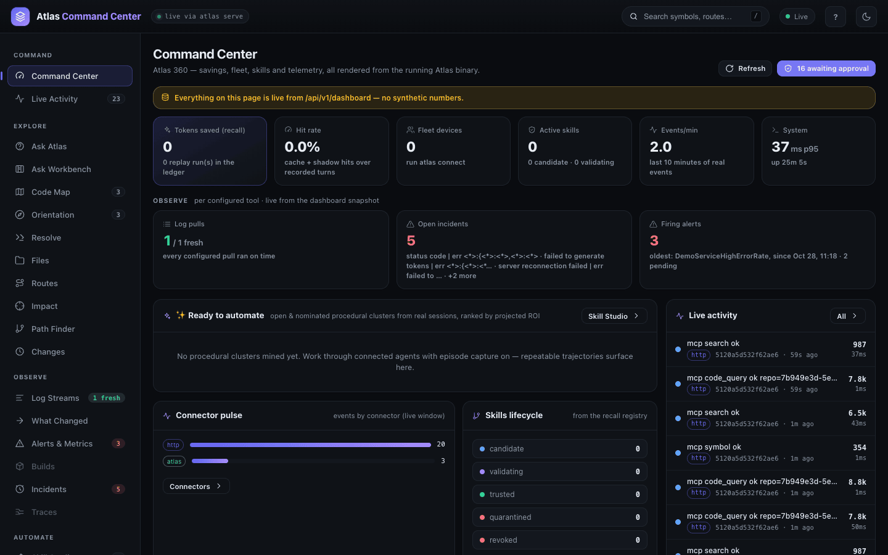
Find Your Way Around
The rail on the left groups the views by job. A badge beside an item is a live count: events in the stream, open incidents, firing alerts, skills, repositories.
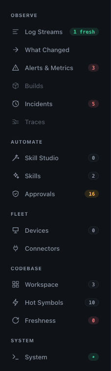
| Group | Views | Use it to |
|---|---|---|
| COMMAND | Command Center, Live Activity | See what the service holds and what it is doing right now. |
| PINNED | Symbols you starred | Jump back to the symbols you keep returning to. Hidden until you pin one. |
| EXPLORE | Ask Atlas, Ask Workbench, Code Map, Orientation, Resolve, Files, Routes, Impact, Path Finder, Changes | Read and question the code: search, ask, map, trace a path, size a change. |
| OBSERVE | Log Streams, What Changed, Alerts & Metrics, Builds, Incidents, Traces | Read what a running system is doing. Each item is greyed until the tool it needs (Loki or Elasticsearch, Prometheus, Jenkins, Tempo) is configured. |
| AUTOMATE | Skill Studio, Skills, Approvals | Turn repeated work into reviewed skills and decide pending requests. |
| FLEET | Devices, Connectors | See connected machines and configure monitoring tools. |
| CODEBASE | Workspace, Hot Symbols, Freshness | List every indexed repository, its most-connected symbols and how fresh each index is. |
| SYSTEM | System | Check the service's own health, settings and AI providers. |
The header carries four controls on the right:
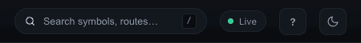
- Search symbols, routes… — the omnibox. Press
/anywhere to focus it (see below). - Live — pauses and resumes the dashboard's live refresh. Pause it when you want the numbers on screen to stop moving.
- ? — replays the five-step product tour: Orientation, Ask Atlas, Code Map, Routes, and search with the command palette. Each step highlights the real control; Skip closes it, Back and Next step through.
- The theme button switches between dark and light. The choice is remembered in this browser.
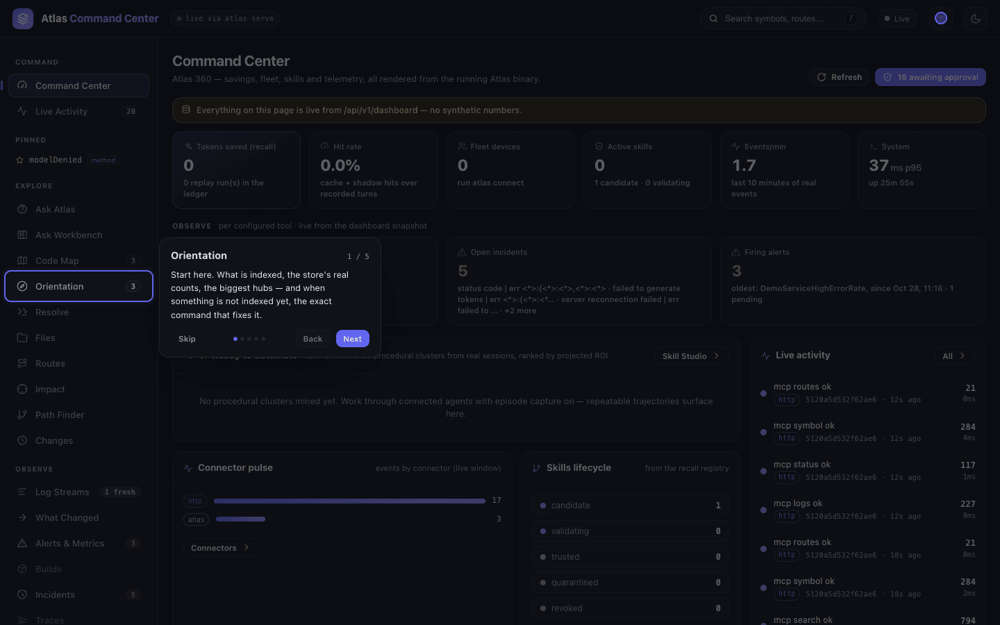
Read the Command Center
The Command Center is a summary of the whole service, read from one endpoint (/api/v1/dashboard). Nothing on it is sample data: a tile with nothing to count says so. Click a tile to open the view that owns its number.
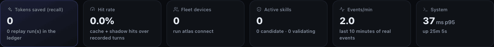
| Tile | The number | Opens |
|---|---|---|
| Tokens saved (recall) | Tokens the recall ledger recorded as saved by replaying a stored answer, with the number of replay runs beneath. | Skills |
| Hit rate | Cache and shadow hits over recorded turns. | Skills |
| Fleet devices | Machines connected with atlas connect; a device is flagged stale after seven days without a push. | Devices |
| Active skills | Trusted skills, with the candidate and validating counts beneath. | Skills |
| Events/min | Recorded events over the last ten minutes. | Live Activity |
| System | The service's p95 serving latency and its uptime. | System |
Below the tiles:
- OBSERVE — one tile per configured monitoring tool, such as Log pulls, Open incidents and Firing alerts. With nothing configured the row reads Observe is off and lists each tool, the views it unlocks, and the CLI command and HTTP route that configure it.
- Ready to automate — repeated procedures mined from real sessions, ranked by projected savings, each with Create skill. Empty until agents work through Atlas with episode capture on.
- Connector pulse — events per connector in the live window.
- Skills lifecycle — skills per stage: candidate, validating, trusted, quarantined, revoked.
- Code graph index — links to Orientation and Hot Symbols.
- Live activity (right rail) — the seven newest events: what was asked, which connector, how many tokens, how long it took. All opens the full stream. Below it, an Approvals card appears when requests await a decision, and a Devices card lists connected machines.
Live Activity (#/events) is the full stream. Filter it by connector with the chips (each shows its count), by tier (automation, exact, semantic, live), or by any text in the Filter events… box.
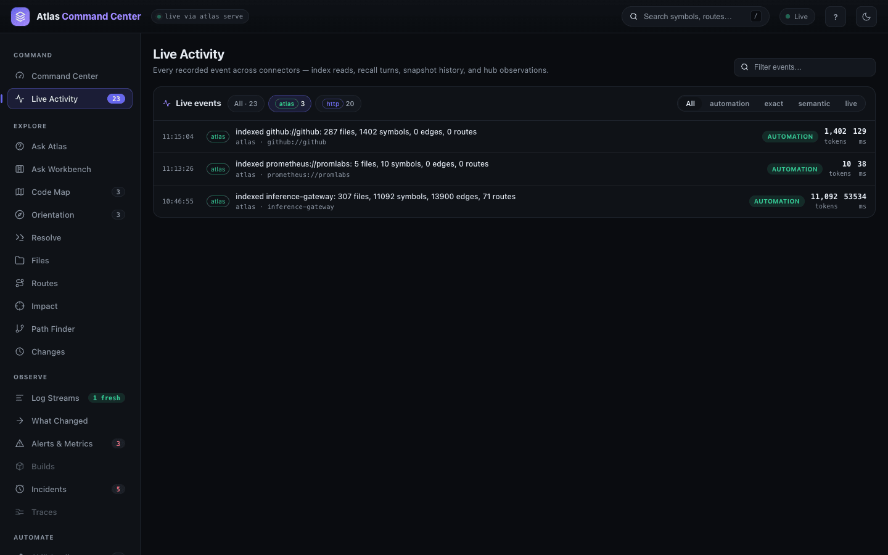
Search and Inspect a Symbol
The omnibox in the header finds any indexed symbol from any view.
- Press
/(or click the box) and type at least two characters. - Results arrive grouped by kind — METHOD, FUNCTION, TYPE, FIELD, KEY — each with its file and line.
- Use
↑↓to select andEnterto open the symbol in the inspector.Enterwith nothing selected sends the text to Ask Atlas as a question instead (or, when logs are configured, a query that looks like a log line to Log Streams).
The inspector docks on the right, over whatever view you are on. For modelDenied it shows:
- the name, kind and location (
routes.go:622), with a star to pin it, a copy-link button and close; - Code Map and Ask about this, which open the symbol in those views;
- Explain — the signature; then Body excerpt, Callers (5), References (5) and Neighbors, each loaded on its own and each saying so when it is empty;
- Blast radius and History at the foot, which run the impact and history queries for this symbol.
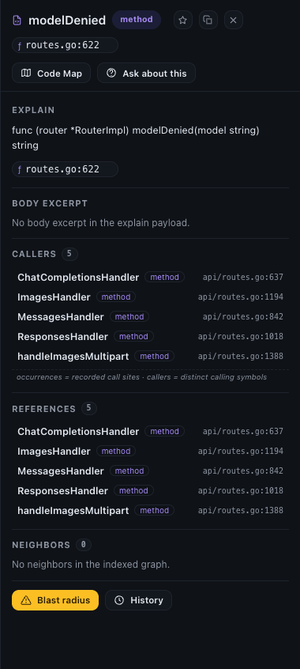
The inspector's state rides the URL (?sym=modelDenied&symPath=api/routes.go), so a copied link reopens it. Star a symbol and it appears under PINNED in the rail; click the pin to reopen the inspector. Pins are kept per store in this browser, up to 20.
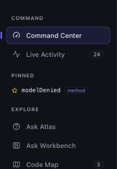
For actions as well as symbols, press ⌘K (Ctrl+K) for the command palette. It jumps to any view by name, lists matching symbols, and offers actions built on your text: Ask Atlas, Search Routes, Impact for the top hit, Path Finder from the top hit.
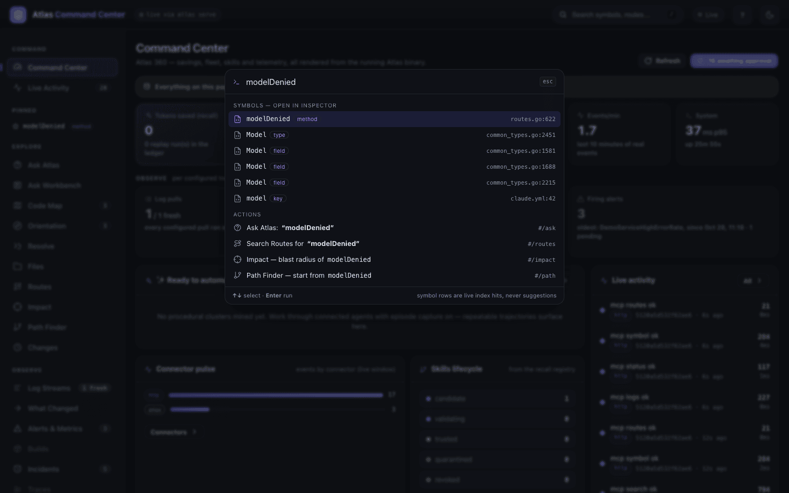
Get Oriented in a Repository
Orientation (#/orient) is the page to open first on an unfamiliar repository. Pick the repository at the top; Open Code Map and Ask Atlas carry it into those views.
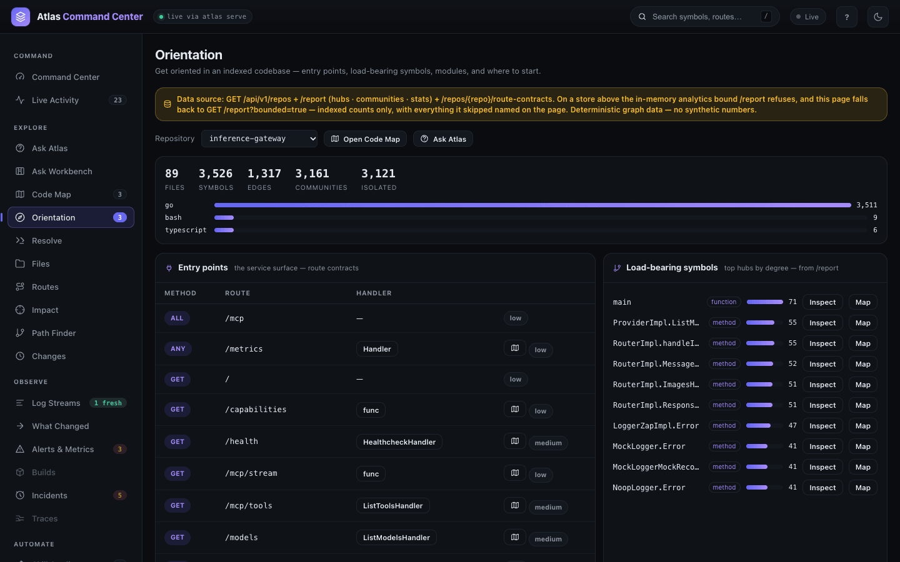
- The counts strip — FILES, SYMBOLS, EDGES, COMMUNITIES, ISOLATED — and a bar per language come from the graph report, which reads non-test code symbols and call edges. That is why they are smaller than the repository's stored totals: 89 files and 3,526 symbols here, against 307 files and 11,092 symbols stored.
- Entry points lists the routes the repository serves — method, path, handler — with the confidence of each match.
- Load-bearing symbols ranks the hubs by degree; Inspect opens one in the inspector, Map in the Code Map.
- Modules & communities, further down, groups symbols that call each other densely.
Browse Repositories and Files
Workspace (#/workspace, under CODEBASE) lists every repository the service holds. The tiles total repositories, files, symbols, dependency edges and route contracts; the Knowledge map draws one tile per repository, sized by symbols and coloured by how recently it was indexed. The Per-repository index table below gives each repository's counts, index mode, age and status, with Orient me and Map buttons.
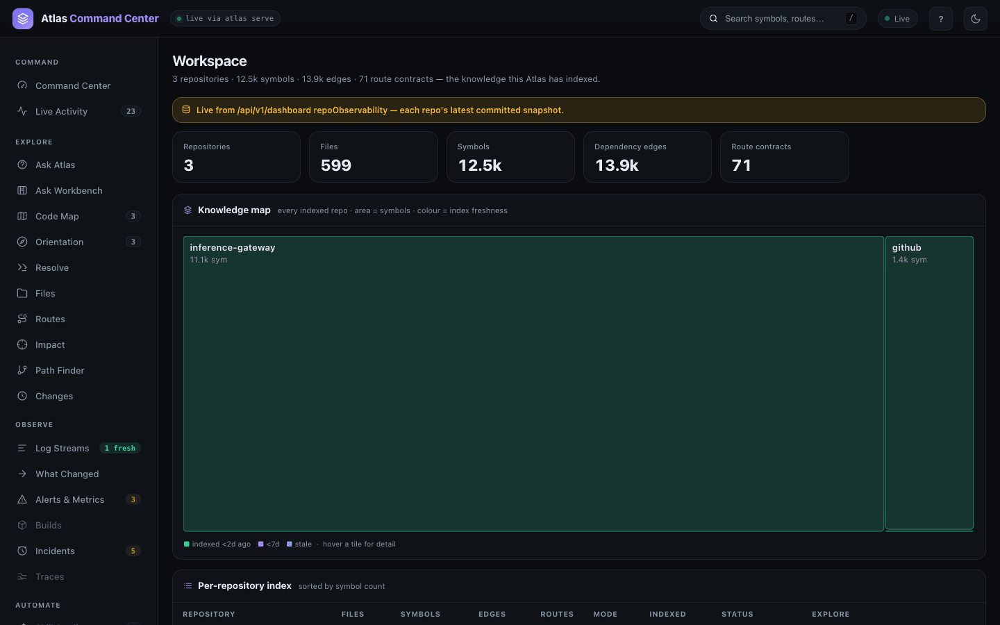
Files (#/files) walks a repository as a tree. Sort the tree by name, syms or rel, or filter it by path and symbol name. Select a file and the Details panel shows its relations, the routes it serves, a likely test file, the packages it imports and the files that import it, with Map this file's folder, Ask about this file and Compare….
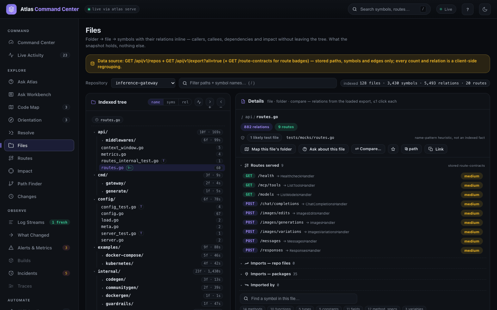
Check the Service
System (#/system) has two tabs. Overview is the service's own footprint, streamed live: uptime, memory, CPU, serving latency, the size of the graph database, the lexical index and the telemetry database, events recorded and an estimate of tokens served. Below the tiles are a live resource timeline, a Per-tool breakdown of every tool call served, and the operational settings with where each value comes from (environment, settings file or default). Run self-diagnostic, Clear stale snapshots and Compact storage are the maintenance actions.
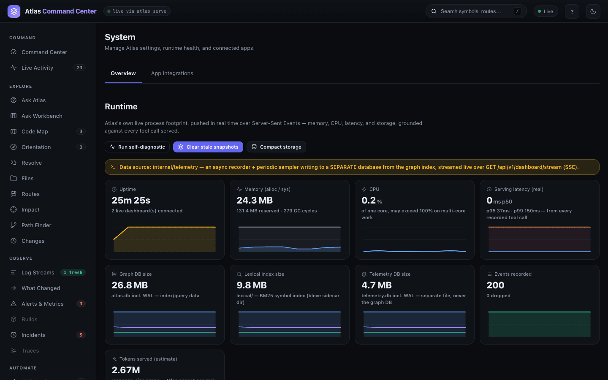
App integrations is where the optional AI answer gets its provider. Atlas detects the Claude and Codex CLIs and API keys on the machine; each provider card shows its model, the credential it uses, what leaves the machine, and a Test button. The same tab shows the GitHub and Pulse integrations of the Ask Workbench and the Jira sign-in.
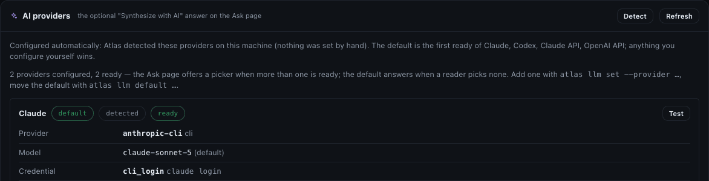
From the CLI
The same facts the frame shows are one command away. atlas status is the storage and contract check, one line per repository:
atlas status --format plain
status schema 8 index_format 5 lexical 4 mcp 2 driver sqlite
inference-gateway 52496750 format 5 symbols 11092 edges 13900atlas stats is one repository's index telemetry. store_rows are the stored totals the Workspace view shows; graph is the report's non-test call graph that Orientation shows:
atlas stats --format plain
stats inference-gateway local/sqlite history 1 coverage_facts 0
latest 52496750 mode full files 307 symbols 11092 edges 13900 routes 71 53534ms
store_rows files 307 symbols 11092 edges 13900 routes 71
graph files 89 symbols 3526 edges 1317 communities 3161 isolated 3121
langs go:3511 bash:9 typescript:6atlas repo list is the Workspace table; atlas repo rm forgets a repository and its data:
atlas repo list --format plain
NAME PATH COMMIT INDEXED STATUS
inference-gateway inference-gateway 524967508e9d90185c4a1c3540cac0dcda7c580a 2026-10-28T05:16:55Z readyEvery command and flag is in the CLI reference.
From the API
The Command Center reads one snapshot, GET /api/v1/dashboard, and keeps it fresh over GET /api/v1/dashboard/stream (server-sent events). The snapshot's top-level blocks are meta, kpis, series, tierBreakdown, clusters, automations, approvals, events, repoObservability, devices, decisions, recall, system and observe; Workspace reads repoObservability. GET /api/v1/status is the same check as atlas status:
curl -s http://127.0.0.1:3099/api/v1/status
{"data":{"tier":"local","storage_driver":"sqlite","vector_backend":"disabled","repos_indexed":1,
"repos":[{"repo_full_name":"inference-gateway","commit_sha":"524967508e9d90185c4a1c3540cac0dcda7c580a",
"files":307,"symbols":11092,"edges":13900,"routes":71,"producer_routes":39,"consumer_calls":32,
"indexed_at":"2026-10-28T05:16:55Z","state":"ready", …}]}}Tokens, the full route list and the HTTP MCP endpoint are on Dashboard and API.
Related
- What Atlas does — one frame of every area.
- Code Map and graph — the five map lenses, Path Finder and Resolve.
- Search and Ask — the omnibox,
atlas searchand the Ask page. - Ask Workbench — a cited conversation about the code.
- Observe and Connected sources — the OBSERVE group and the Connectors page.
- Dashboard and API — running the service.